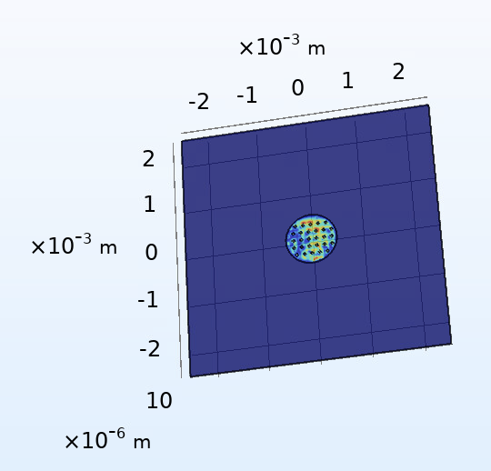

June 22, 2020
4 minute readThe main focus of this week was to develop a mathematical model to verify (or challenge) the results that we have been receiving from the photoacoustic model. We also made some changes to the laser heating model from before to incorporate more of a mesh-link structure.
We treat the diaphragm as a thin, clamped plate. If the diaphragm was free, the magnitude of thermal expansion would be: which translates to a thermal stress of: Using the solutions for clamped plates presented in [1] , the displacement function is derived to be: where the deflection at the edge of the plate is 0, and the maximum displacement occurs at the center of the plate: This displacement is smaller than anticipated and also smaller than the displacement from the initial laser heating results. One reason for this may be our initial estimate for the thermal stress, and other methods to calculate this stress include utilizing Mitchell’s equations or the displacement potential function.
The laser heating model was updated to include a more mesh-like structure:
The vibrations from this are slightly larger than the vibrations of the initial model, \(10^{-9} \) m vs \( 10^{-10}\) m. This may be attributed to more heat leaving the model due to the presence of heat transfer in air. However, one concern from this model is that we expect circular symmetry of vibrations, and this is no longer present after altering the model. Additional improvements planned to make the laser heating model more accurate include adding springs along the edges. This would allow for slight horizontal movement of the membrane in addition to the current vertical movement and oscillatory behavior.
Additional improvements planned to make the laser heating model more accurate include adding springs along the edges. This would allow for slight horizontal movement of the membrane in addition to the current vertical movement and oscillatory behavior.
Trick or Heat? Manipulating Critical Temperature-Based Control Systems Using Rectification Attacks [2] exploited the rectification effect in amplifiers to attack temperature sensors. Op-amps require a DC bias to operate correctly, but if a high frequency sine wave is injected into the amplifier, its amplification can result in a DC offset error. To minimize this error, it is best to suppress external noises; however, this attack exploits sensors that have not used noise suppression controls in their circuits. Temperature sensor attacks from this paper have been found to affect infant incubators and laboratory equipment.
An interesting defense explained in the paper is the hardware anomaly detection system for devices where it is not possible to establish a filter for external noises. By introducing a superheterodyne receiver into the circuit before the amplifier, you can convert the received signal to intermediate frequency rather than high frequency, and this effectively suppresses the DC offset. Additionally, this component can be periodically activated only when temperature measurements are actually required.